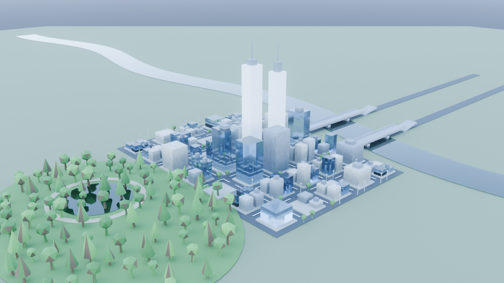
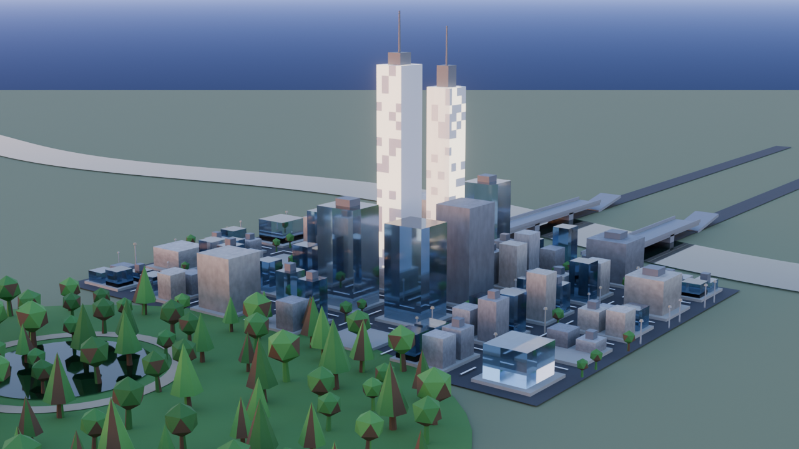
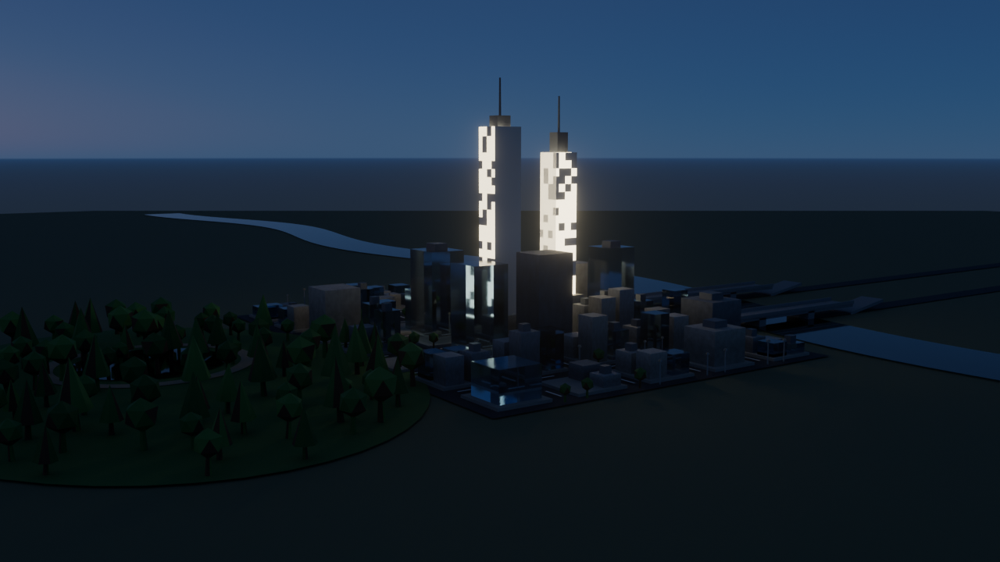
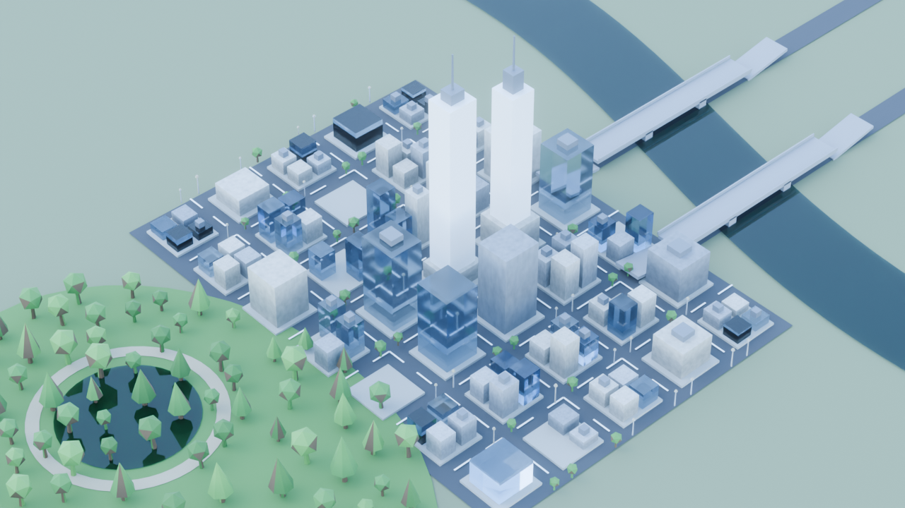

One city plan — same block grid, same river meander, same park — built twice.
Once with three.js in the browser (buildings.html),
once with Blender 5.2 through bpy and rendered in Cycles.
The layout constants are shared, so what changes between them is the renderer,
not the city.
These stills are what Cycles buys and what it costs: real light transport, but seconds per frame instead of milliseconds. The Blender city is also interactive here — exported to glTF and orbitable in the browser, with the light transport left behind.

Global illumination, soft shadows, and glass that actually refracts.
Not possible in three.js: light bounces. Facades pick up colour from the surfaces around them, and the sun's angular diameter gives shadows a real penumbra instead of a hard edge.

Low sun through a physically-based sky, with depth of field.
Not possible in three.js: the sky model is live, not a baked environment map — drop the sun to 4° and the long atmospheric path strips the blue out by itself. Nothing is hand-tinted.

The windows are the light source.
The clearest thing three.js cannot do. An emissive material in a rasteriser looks bright but illuminates nothing. Here the lit panes are real emitters: they light the towers opposite, the street below, and the haze between them. A procedural noise mask decides which panes are lit.

A real aperture, not a blur filter.
Not possible in three.js: the defocus comes from tracing rays through a physical lens, so it falls off correctly with distance. That shallow plane across a large subject is what makes a city read as a model.
| Feature | Why three.js can't | Where you see it |
|---|---|---|
| Path tracing | Rasteriser — no true GI | Colour bleed onto the street |
| Emissive lighting | Emissive maps light nothing | night |
| Glass BSDF | Faked with a blue tint | Tower facades |
| Geometry Nodes | No procedural graph — 110 hand-placed trees | Park scatter, 167 instances |
| Physical sky | Approximated, then baked | Sun angle drives the light |
| Volumetrics | Unavailable | Haze toward the horizon |
| Depth of field | Post-process approximation | tiltshift |
| Procedural materials | Needs textures or canvas hacks | Every surface — no image assets |
nix-shell, then
blender --background --python blender/build_city.py -- --preset night.
Presets: noon, dusk, night, tiltshift.
Add --seed N for a different city under the same rules.
Full notes in docs/BLENDER.md.
The two cities are not identical building-for-building: both are seeded, but the Blender version uses Python's PRNG rather than reimplementing the JavaScript one. Same rules and statistics, different draw.